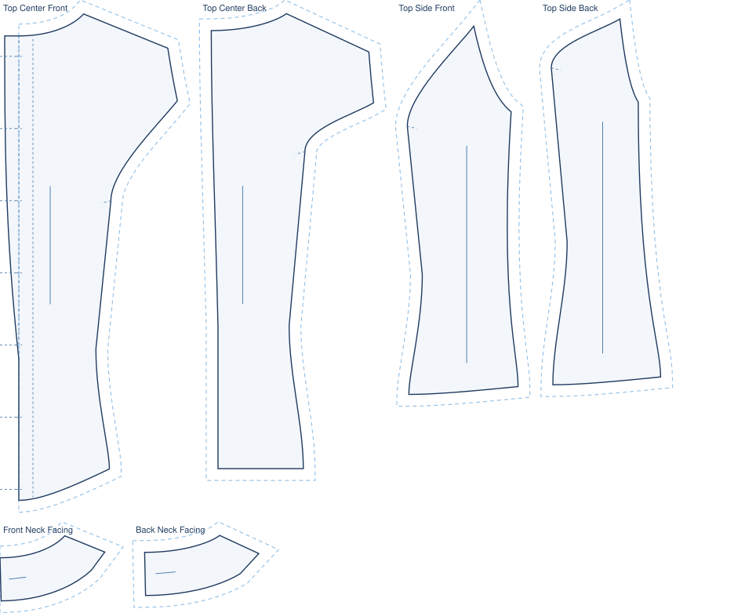

stitchu / patterns / Boat neck button-down top
A boat-neck top that buttons all the way down the front. The button placket is drafted, not implied: a grown-on stand carries the buttons and buttonholes on the printed piece.

The engine's own drafted pieces for this style, laid out for cutting. Drawn to an EU38 demo body.
The front button placket grows on to the centre-front edge as an 18 mm stand, with a fold line, a fold-back facing line and the buttons and buttonholes marked directly on the piece.
A button is forced at the bust line so the front cannot gape, following the womenswear right-over-left rule.
Princess seams over the bust shape the fit vertically, so the top follows the body without darts pulling at the button line.
| pattern pieces | fabric estimate |
|---|---|
| Crisp mid-weight woven cotton, roughly 1.7 m at 140 cm. 6 pieces · fabric scales to your measurements |
This pattern became possible in patch 1.3, when the engine learned to draft the front button placket. Before that, boat neck button-down top came out missing that piece.
See patch 1.3 in the patch notes →
Draft this to your measurements, free. Browse the pattern library →